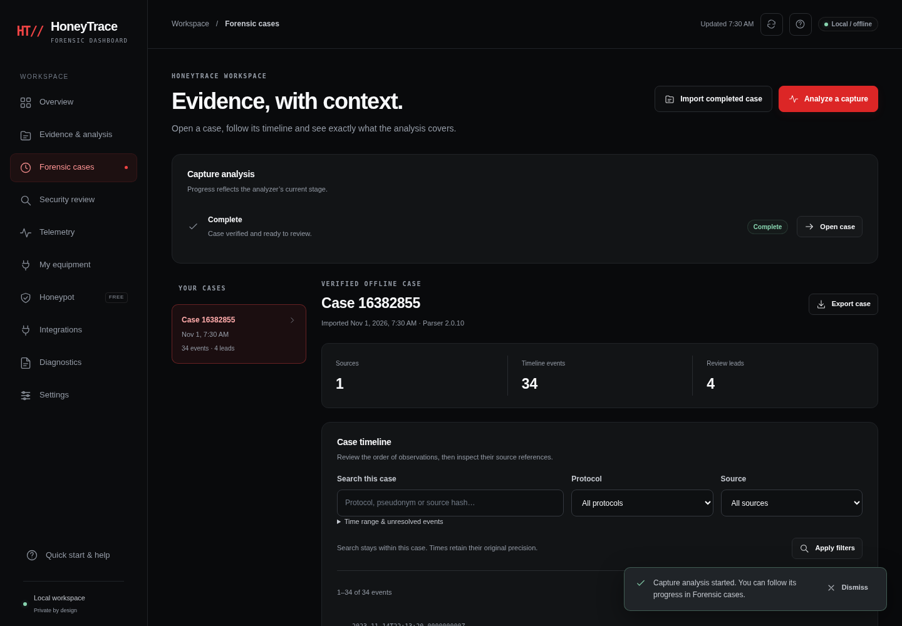
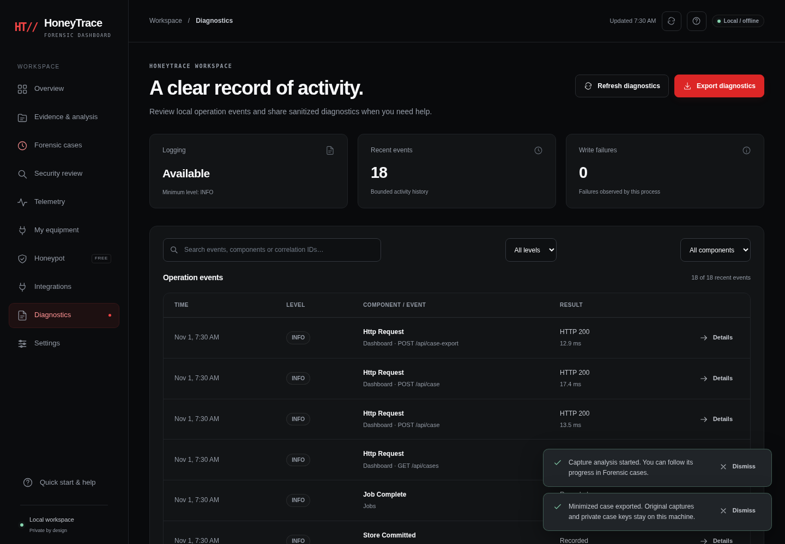
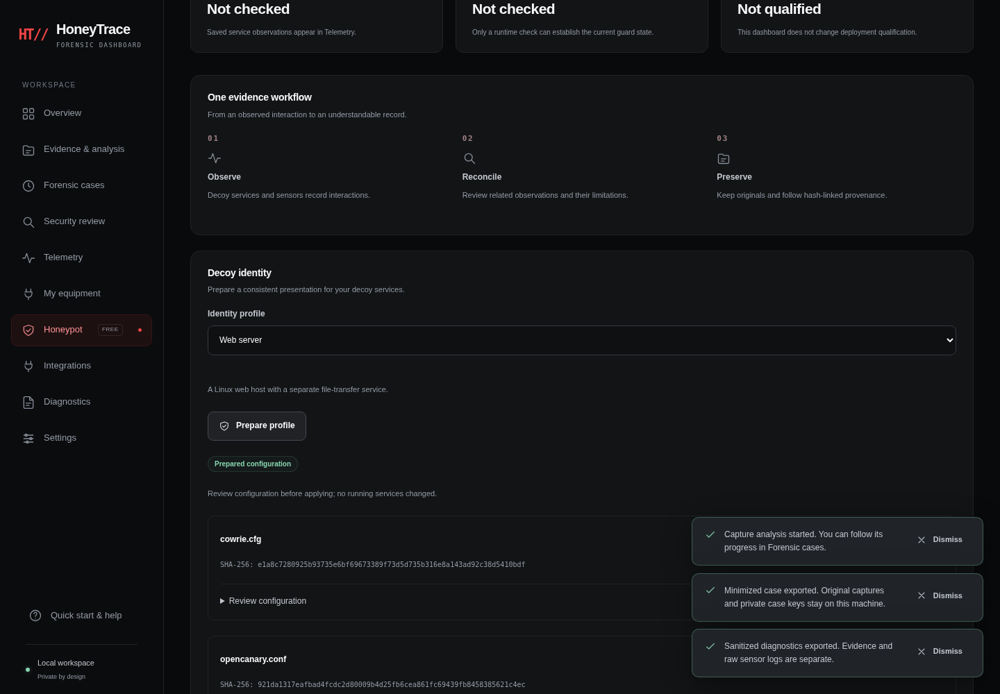

01 / FREE FOUNDATION
Honeypot & telemetry
Decoy-service observations, saved sensor health and preserved evidence form the free core.
HONEYTRACE SECURITY SUITE
Start with the free honeypot core. Bring forensic cases, telemetry and optional security tools into one clear, local workspace.
Review source · Python 3.11+ · Linux
This is a source preview, not a production installer.
A LOOK INSIDE
Synthetic demonstration
No live telemetry or private evidence

Case timeline → Coverage → Source provenance
Synthetic example · Screenshot pendingAnalyze a local PCAP or Packet Squirrel capture with the bundled Sentinel analyzer. Search its timeline, inspect coverage and follow hash-linked provenance.

Operation events → Useful filters → Sanitized export
Synthetic example · Screenshot pendingReview structured operation events, filter by component or level, and export sanitized diagnostics for troubleshooting.

Choose a profile → Review configuration → Download files
Synthetic example · Screenshot pendingPrepare identity profiles, review configuration and download the files. Applying a profile and restarting services remain separate operator actions.
This is a static product preview. The dashboard runs on your own machine; this page has no access to its session, evidence or services.
01 / FREE FOUNDATION
Decoy-service observations, saved sensor health and preserved evidence form the free core.
02 / CONNECTED ANALYSIS
Verified Sentinel cases, searchable timelines, backup metadata and supported assessment reports in one workflow.
03 / ROOM TO GROW
Enable the modules you need. Live provider integrations and BLE, Wi-Fi and RF capture remain on the roadmap.
START WITH THE LOCAL WORKSPACE
Use a normal Linux user with Python 3.11 or newer. The local dashboard needs no Node build or cloud account.
Download the review ZIP and open a terminal in the extracted repository folder.
bash tools/launch-dashboard.shOpen the complete local URL printed in the terminal. Keep its session token private.
Sentinel Forensics is included under sentinel-forensics/ and selected automatically. The dashboard connects its supported offline capture workflow; completed cases can also be imported directly.
To use another trusted checkout, supply this optional override:
bash tools/launch-dashboard.sh --sentinel-root /absolute/path/to/sentinel-forensicsCurrent capture analysis targets small datasets; backup support inventories finished, unencrypted metadata.